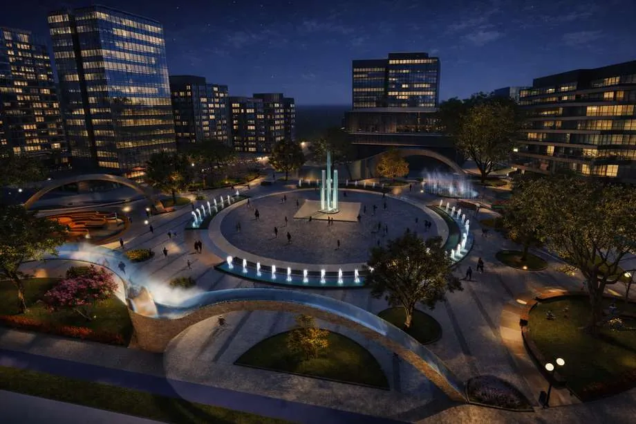
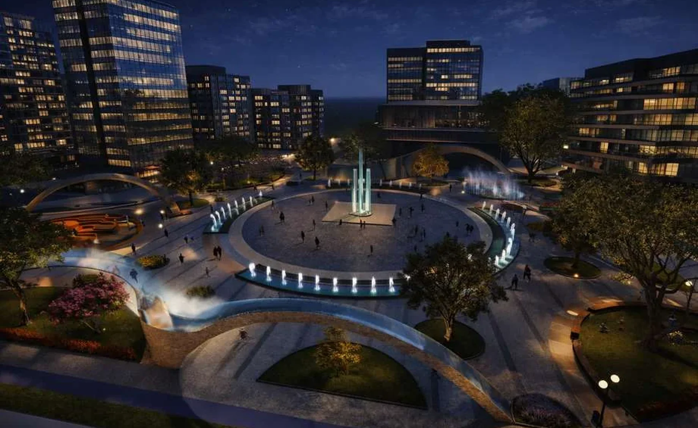

01Public SpaceKamusal Alan
Urban SquareKent Meydanı
A public landscape shaped around reflection, interaction and urban experience.Yansıma, etkileşim ve kentsel deneyim üzerinden kurgulanan kamusal peyzaj.

I develop landscape projects by connecting spatial experience, ecology, technical thinking and visual storytelling.Mekânsal deneyim, ekoloji, teknik düşünce ve görsel anlatımı bir araya getirerek peyzaj projeleri geliştiriyorum.
Seven academic and competition projects, re-edited for the web as individual case studies rather than compressed portfolio pages.Yedi akademik ve yarışma projesi, sıkıştırılmış portfolyo sayfaları yerine web için ayrı vaka çalışmaları olarak yeniden düzenlendi.

I am a landscape architecture student at Bursa Uludağ University. I am developing my practice across design, project development, teamwork and visualization, with a particular interest in turning analysis and concept into clear spatial decisions.Bursa Uludağ Üniversitesi Peyzaj Mimarlığı öğrencisiyim. Tasarım, proje geliştirme, ekip çalışması ve görselleştirme alanlarında kendimi geliştiriyor; analiz ve konsepti anlaşılır mekânsal kararlara dönüştürmeye özellikle önem veriyorum.
My portfolio moves across campus landscapes, private and collective housing, public space, urban planning, technical detailing and competition work.Portfolyom; kampüs peyzajı, tek ve toplu konut, kamusal alan, kentsel planlama, teknik detay ve yarışma çalışmalarını bir araya getiriyor.
A portfolio is stronger when it shows the thinking behind the image. These areas organize the work across the site.Bir portfolyo yalnızca sonucu değil, görselin arkasındaki düşünceyi de gösterdiğinde güçlenir. Sitedeki çalışmalar bu alanlar etrafında düzenlendi.
Concept, circulation, program, planting and material relationships.Konsept, dolaşım, program, bitki ve malzeme ilişkileri.
Natural-cultural data, synthesis, accessibility and green infrastructure.Doğal-kültürel veriler, sentez, erişilebilirlik ve yeşil altyapı.
Plans, sections, construction logic, materials and details.Plan, kesit, konstrüksiyon mantığı, malzeme ve detaylar.
3D modeling, rendering, presentation boards and visual storytelling.3B modelleme, render, sunum paftaları ve görsel anlatım.